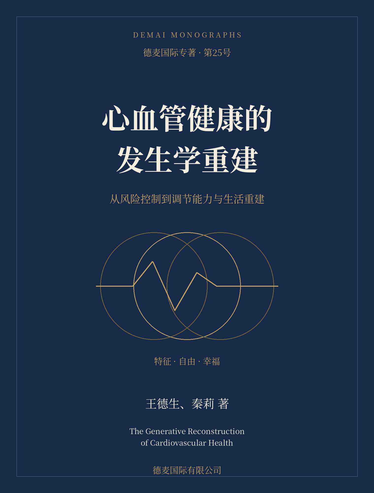

DEMAI MONOGRAPHS / 025 / 数字重编版 v1.0

保护生命，也让生命重新生活
从指标、调节能力与生活意义三个层面重建健康理解。全书以三律与SDE组织提问，以医学证据约束临床结论，讨论血脂、血压、血糖以及门诊、家庭、制度和智能工具。
本版由11篇独立论文与整书初稿所含16项材料重编，不是原稿逐句转录。重组长段落，接通论证，增加案例与反例，并逐项区分理论、证据与实践建议。
三律框架不作为已验证的诊断或治疗系统。书中教学案例为构拟，不代表实际疗效；不据此自行停药、改变治疗或进行极端训练。实质修订见附录四。
全书结构
- 第一编 把健康还给一个完整的人
- 第二编 从“翻案”走向可以检验的因果
- 第三编 血脂与血管：越过敌人的隐喻
- 第四编 血压：让风险与节律同时进入诊室
- 第五编 血糖：让代谢与生活共同持续
- 第六编 让健康发生的共同工程
出版与版本
德麦国际有限公司 · 第25号专著
沿用既有书名、作者顺序与ISBN；第220号仅作版式和阅读体验参照。
本版未另行编造定价，亦不表示已取得外部临床审稿或新版纸书登记。正文与证据校订截至2026年10月2日。
原有专题入口
以下为保留的历史理论专题，不作为本次重编的临床证据。